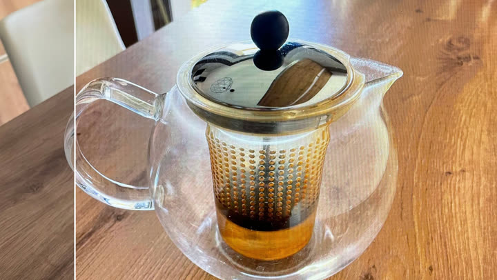

01–07/2025 CEA Saclay
CEA Saclay
Master's thesis internship · 3D rendering R&D
More realistic reflections in Gaussian Splatting for virtual reality.
C++CUDAPyTorch
Learn more →R&D Engineer · Graphics, geometry & 3D ML
MSc in Computer Science specialising in rendering, geometry and performance for 3D. Machine learning in PyTorch and in native C++/CUDA. Recent experience at CEA Saclay on Gaussian Splatting for VR. Open to international relocation.
Path tracer with microfacet BRDFs, SDF geometry and CSG, accelerated by a BVH.
CUDA kernels for a heightmap; MPI and OpenMP sub-image search.
Meshes, textures, cameras, lights, shaders and deferred rendering.
Sweep and Prune, BVH and Möller's triangle-triangle test.
Incompressible SPH fluid with turbulence, based on a research paper.
Layer slicing: Delaunay and GPU rasterization.
Contour tracking, polygonization and shape measures.

Face generation, image super-resolution and recaptured-photo detection based on a research paper.
More realistic reflections in Gaussian Splatting for virtual reality.
Fixes to geometry algorithms in production software.
University of Limoges · computer graphics
University of Limoges
Interests: trumpet at the conservatory (2011-2019), treasurer of the master's student association, climbing.
Reference: research engineer at CEA, my internship supervisor, contact on request.